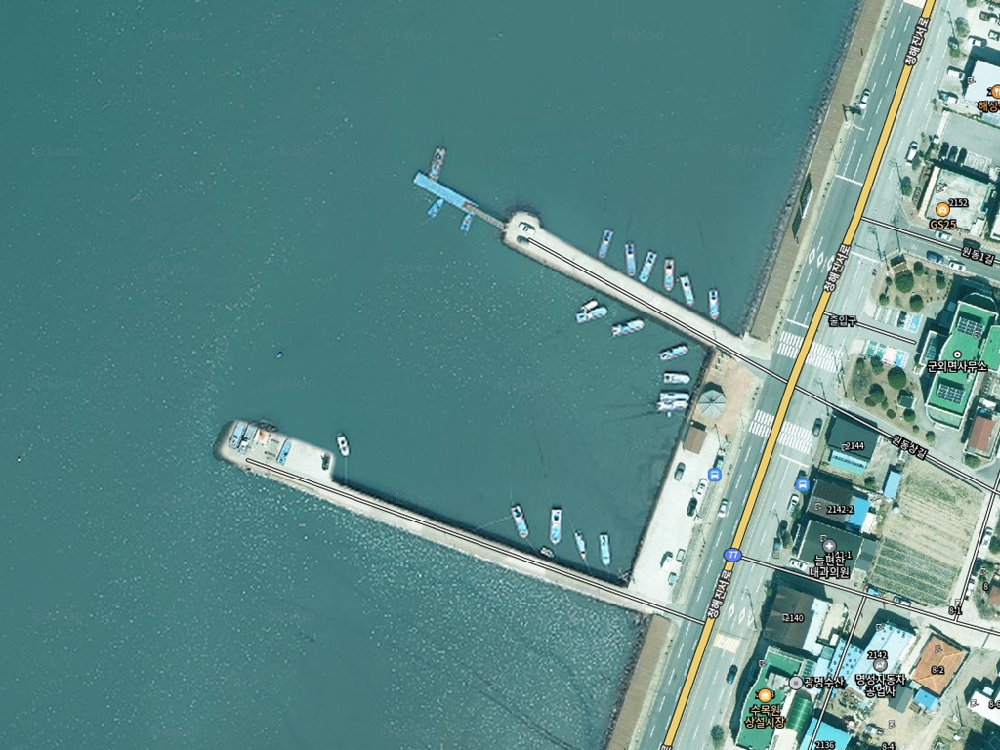
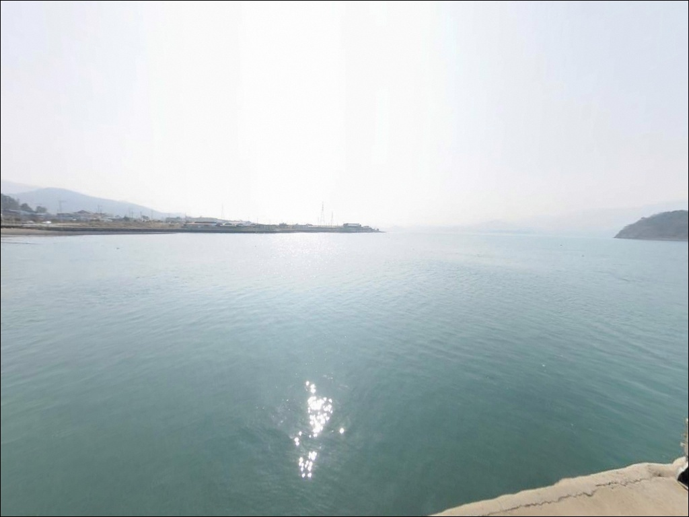
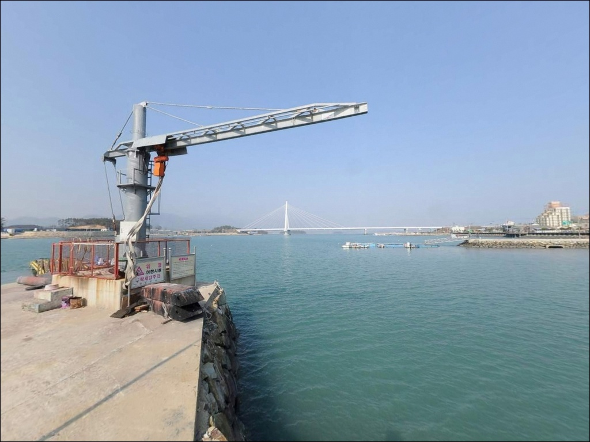
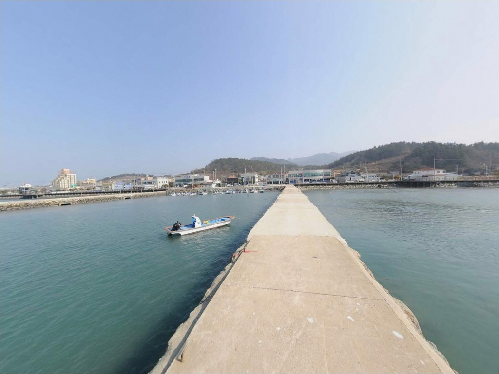
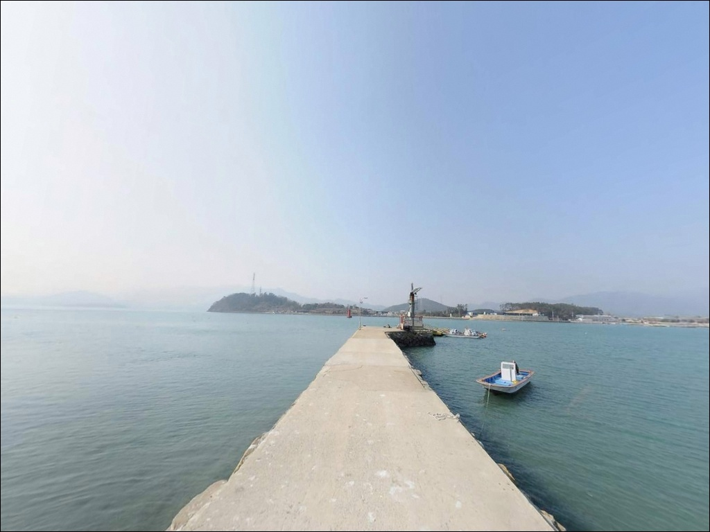
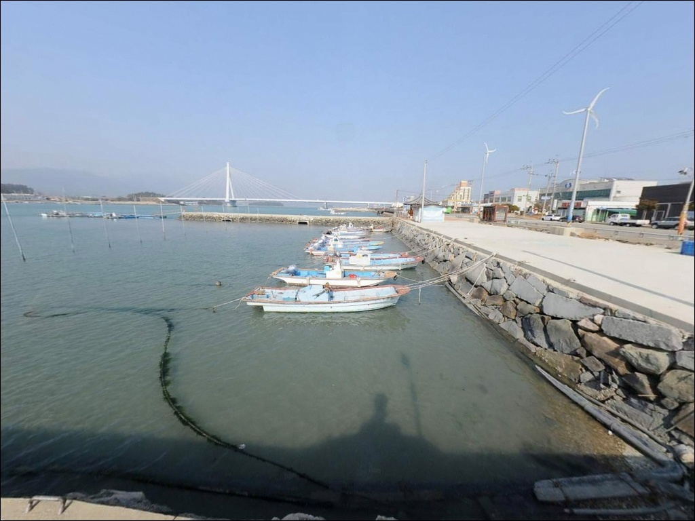
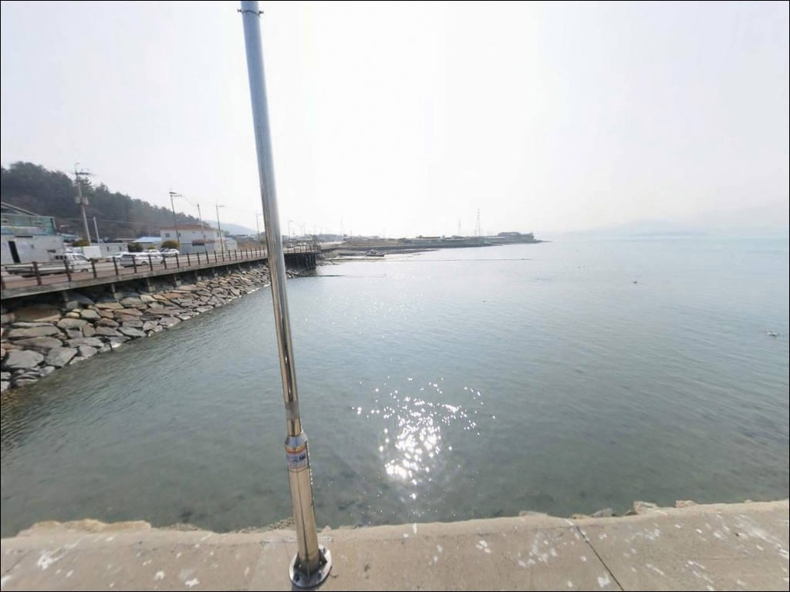
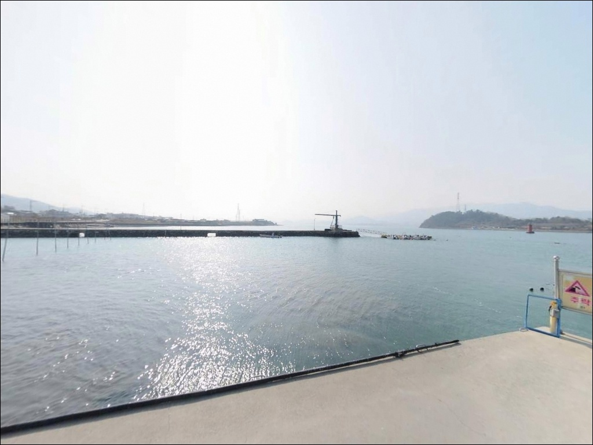
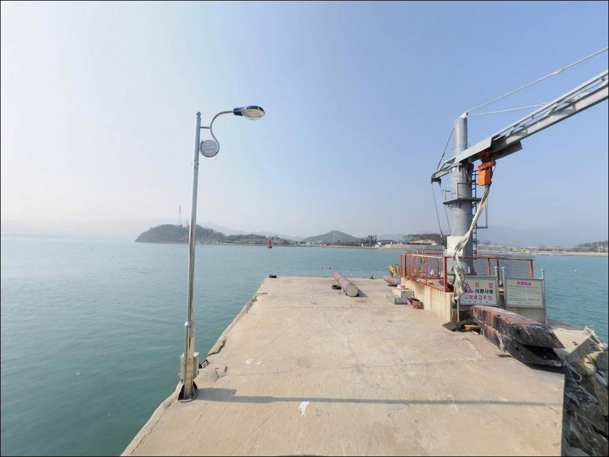

원동 방파제, 전남 완도군 손맛 보기 딱 좋은 계절 바다 차박 낚시 장소


포인트 안내
원동 방파제
전남 완도군 군외면 원동리 1074-2
원동 방파제는 완도대교 교각 조류가 집중되는 구조여서,
물때를 따지지 않고 찾아가면
강한 조류 앞에서 어떤 채비도 버텨주지 않습니다.
사리 전후 강조류 구간에 진입하면
봉돌을 아무리 무겁게 달아도
채비가 쓸려 낚시 자체가 불가능해집니다.
이 글은 원동 방파제의
진입 동선, 조류 기반 낚시 타이밍,
낚시 스타일 적합성, 차박 여건에 집중합니다.
조황 단정이나 특정 어종 보장은
이 글의 범위에 포함되지 않습니다.

1. 완도대교 진입부 —
원동 방파제 접근 동선과 주차 여건
원동 방파제는 완도대교 북단,
군외면 쪽 교각 진입부에 바로 인접한 위치입니다.
77번 국도 또는 지방도를 통해
원동리 방향으로 진입하는 구조이며,
교량 진입부 인근이라는 지리적 특성상
포장도로 접근이 가능한 방파제입니다.
방파제 본체까지의 진입로는
마을도로 수준으로 이어지는 구간이 포함되어 있습니다.
항만 부지는 비교적 넓게 조성된 구조여서
대형 차량의 회차 이동에 큰 무리가 없는 편이지만,
방파제 끝단에 가까운 구간의 진입로 폭은
현장에서 직접 확인하는 편이 안전합니다.
주차는 원동선착장 인근 공터 또는
물양장 앞 평탄화 구역이 1순위 후보입니다.
선착장 구조 특성상 차를 방파제 가까이
댈 수 있는 구간이 존재하며,
어선 계류 로프와 작업 동선을 피해
자리를 잡는 것이 기본 매너입니다.

2. 교각 옆 야간 체류 여건과
차박 환경
완도대교 교각 인접 구조는
야간에도 교량을 지나는 차량 소음이
지속적으로 발생하는 환경입니다.
조용한 야간 체류를 우선시하는 차박 여행자라면
소음 여건을 미리 감안하고 방문하는 편이 좋습니다.
항만 시설 특성상 교량 조명이 수면 쪽으로
반사될 가능성이 있어
완전한 암흑 환경은 아닌 편입니다.
야간 낚시를 겸할 때는 이 교량 조명이
오히려 유리하게 작용하는 경우도 있습니다.
외항 끝단 구간은 어두울 수 있어
개인 헤드랜턴은 필수입니다.
원동마을 주거 시설이 방파제 후방에 인접해 있어
완전한 외딴 포인트 분위기는 아닙니다.
야간 차량 통행은 많지 않은 편이며,
낚시 후 한숨 쉬어 가는 용도로는
나쁘지 않은 환경이지만,
차박을 메인 목적으로 삼기 전에
주차 공간과 소음 여건을 현장에서 먼저 파악해야 합니다.


3. 원동리 내 편의 인프라 현황
편의점은 원동리 내에 두 곳이 확인됩니다.
GS25 완도군외점(원동리 1070-6번지)과
CU 완도군외점(원동리 1066-1번지)이
방파제 주소인 원동리 1074-2번지와
같은 리(里) 내에 위치합니다.
차로 수분 거리에서 식수와 간식을 보충할 수 있어
완도 군외면 기준으로는 인프라 여건이 양호한 편입니다.
주유소도 원동리 내에 두 곳 확인됩니다.
GS주유소 두 곳이 원동리 내에 위치하며,
장거리 이동 전 연료 보충이 가능한 환경입니다.
완도읍 방향으로 이동하면
낚시점도 여러 곳 있어
채비 소진 시 보충 동선을 활용할 수 있습니다.

4. 출발 전 반드시 확인해야 할 준비 항목
원동 방파제에서 가장 먼저 챙겨야 할 것은
물때 확인입니다.
바다타임에 원동항 포인트(p-584)가
공식 등재되어 있으며,
적정 물때는 들물로 명시되어 있습니다.
들물 타이밍을 사전에 계산해두는 것이
원동 방파제 공략의 출발점입니다.
완도대교 교각 인근 조류는
물때 전환 시 세기가 빠르게 변합니다.
봉돌은 조류 세기에 맞춰
30호 이상을 준비하는 편이 현실적이며,
암반 경계 구간을 공략할 경우
채비 손실이 잦을 수 있어 여분 채비는 넉넉히 갖춰야 합니다.
기상청 예보와 윈디 기준 풍속 확인은
수로 지형 특성상 당일 아침에 다시 한번 점검하는 것이 좋습니다.
선착장은 어민 조업 공간이기도 합니다.
어선 이동 동선과 계류 로프에
낚시 바늘이 걸리지 않도록
자리를 잡기 전에 주변 상황을 먼저 살피는 것이 기본입니다.
구명조끼는 방파제와 선착장 어느 구간에서든
착용하는 것이 원칙입니다.

5. 완도대교 교각 조류를
낚시에 활용하는 방법
원동 방파제의 핵심은 완도대교 교각 구조입니다.
해남과 완도 사이 수로에서 창조류 1.4노트,
낙조류 1.2노트 수준의 조류 흐름이 나타나며,
이 흐름이 교각 사이로 집중되면서
방파제 외항 쪽에 뚜렷한 조류 변화 구간이 형성됩니다.
이 조류 흐름을 활용하면
찌낚시나 루어 채비에 뚜렷한 반응을 기대할 수 있는 구조입니다.
수심은 방파제 근해 기준 3~4m 내외로
얕은 편에 속합니다.
방파제 끝단에서 외항 방향으로 나올수록
수심 변화 구간이 형성되는 구조로,
바닥 저질은 사질(모래)과 여밭이
혼재하는 지형 특성을 보입니다.
완도대교 교각 사이로 조류가 집중되는 구조는
릴찌낚시 채비를 흘리기에 유리한 지형 조건을 만들어냅니다.
조류가 서는 정조 구간에는
원투 채비를 40~60m 거리로 보내
암반 경계를 탐색하는 방식도 유효합니다.
다만 조류가 강해지는 구간에서는
채비를 고정하기 위한 봉돌 무게 조정이
자리 선택만큼 중요한 판단 기준이 됩니다.
출조 전에 원동 방파제 및 완도 군외면 일대 조황을
꼭 검색해 보시기 바랍니다.


6. 원동 방파제에 어울리는
낚시 스타일
이 포인트에서 지형 조건과 가장 잘 맞는 낚시는
릴찌낚시입니다.
완도 해역은 감성돔과 농어 모두에서
릴찌 방식이 유효한 지역으로 알려져 있으며,
교각 조류가 만드는 본류대를 채비가 타고 흘러가는
구조가 이 포인트의 지형 특성과 맞아떨어집니다.
4월 중순 이후 수온이 오르면 감성돔 시즌이 열리는
해역으로, 가을까지 릴찌낚시 운용이 가능합니다.
원투낚시도 이 포인트에 적합한 스타일입니다.
정조 전후 조류가 잠잠해지는 구간에
40~60m 거리로 채비를 보내면
바닥 어종을 노릴 수 있는 조건이 갖춰집니다.
도다리나 붕장어 등 바닥 어종이
기대 가능한 지형 구조이며,
야간에는 원투 자리를 외항 방향으로 조정하는 편이 유리합니다.
루어와 에깅도 시즌에 따라 운용해볼 수 있습니다.
물돌이란 조류의 방향이 들물에서 날물로,
또는 날물에서 들물로 전환되는 시점을 가리키는
낚시 용어입니다.
이 물돌이 전후에 교각 주변을 공략하는
갑오징어 에깅이나 농어 루어는
조류 변화를 유리하게 활용하는 방식입니다.
야간에 교량 조명이 수면에 반사될 경우
볼락 라이트게임도 선착장 주변에서 시도해볼 수 있습니다.

7. 대안 포인트와
플랜B 동선
원동 방파제 조류가 너무 강하거나
주차 여건이 여의치 않을 때는
삼두리 방파제가 첫 번째 대안입니다.
조류 소통이 좋고 방파제 길이가 넉넉해
자리 경쟁이 적은 편이며,
60~80m 원투 운용에 유리한 구조로
원투낚시 비중이 높은 낚시인에게 맞는 포인트입니다.
당인리 방파제와 황진리 방파제도
군외면 일대에서 접근 가능한 대안 포인트로 확인됩니다.
두 포인트 모두 바다타임에 등재된 곳으로,
원동 방파제에서 이동이 부담스럽지 않은 거리입니다.
완도읍 방향으로 약 12.5km를 이동하면
씨월드 방파제를 만날 수 있으며,
완도 현지 낚시인들이 자주 찾는 검증된 방파제입니다.
차박 여건이 원동 방파제보다 조용한 환경을 원한다면
달도 테마공원 인근 주차 공간을 탐색해보는 것도 방법입니다.
약 2km 거리로 가깝고,
교량 소음에서 벗어난 환경을
기대해볼 수 있는 후보입니다.

조류를 읽고 들물을 맞추면,
원동 방파제는 완도 입문에
손색없는 포인트입니다
릴찌낚시나 원투낚시를 즐기는 낚시인이라면
완도대교 교각 조류를 옆에 두고
공략하는 원동 방파제의 지형 조건은
충분히 관심 가질 만합니다.
들물 타이밍에 조류가 살아 움직이는 구간은
채비를 흘리기에 좋은 구조이며,
같은 리 안에 편의점이 두 곳 갖춰져 있어
자급 부담도 크지 않습니다.
반면 물때 확인 없이 사리 전후에 찾아가거나,
봉돌 무게를 낮게 준비한 채 외항을 공략하면
조류에 채비가 밀려 낚시 자체가
어려운 상황이 될 수 있습니다.
들물 타이밍 확인, 채비 무게 조정, 어선 동선 파악,
이 세 가지를 갖추고 찾아가면
완도 바다의 조류 힘을 느끼기에 좋은 포인트입니다.
교량 소음이 낯설지 않은 낚시인이라면
차 옆에 낚싯대를 세우고
들물 흐름을 기다리는 하룻밤 차박도
원동 방파제에서 가능한 그림입니다.